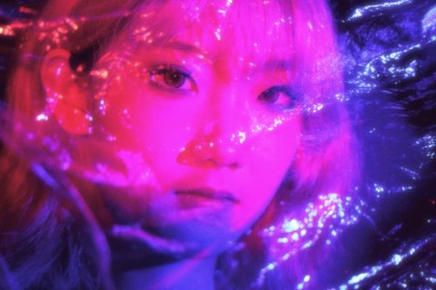

welcome to BELLA.ZIP
BELLA.ZIP
personal space on the internet ...
Hi! I'm Bella.
This is my corner of the internet where
I share my projects, films, thoughts and
random things I love.
Feel free to click around and explore. Maybe you'll find something unexpected. ♡
🪐 good ideas, strange days, and changing hair colors
my_projects.exe


now_playing...
Internet Girl
– Virtual Self
about_bella.txt

HELLO / 你好
Hi, I'm Bella Li!
I'm an Interactive Media Arts student at NYU Tisch, minoring in Business of Entertainment, Media, and Technology. My work brings together AI filmmaking, interactive design, and visual storytelling.
我是 Bella，就读于纽约大学 Tisch 交互媒体艺术专业，辅修娱乐、媒体与科技商业。我的创作结合 AI 影像、交互设计与视觉叙事。
01 / WHAT I CREATE
I create interactive websites, AI-generated videos, and photographic stories. I'm drawn to characters, atmosphere, and the small details that make an experience feel personal.
我创作交互网页、AI 视频与摄影作品，关注角色、氛围，以及那些让观众产生情感连接的小细节。我喜欢把一个想法逐步变成可以观看、探索和参与的作品。
02 / INTERNSHIP EXPERIENCE
During the summer after my first year, I worked as an AIGC intern, contributing to video scripts, storyboards, AI image and video generation, and editing. Videos I contributed to have received over 10 million combined views.
In my second year, I joined IDORE as an Overseas Product Operations Intern, working on North American audience and competitor research, social media content planning, and character-focused AIGC videos.
大一暑假，我担任 AIGC 实习生，参与视频的脚本与分镜策划、AI 图像与视频生成，以及后期剪辑，积累了从创意到成片的制作经验，参与制作的多条作品累计播放量超过千万。
大二期间，我作为海外产品运营实习生参与 IDORE，开展北美用户与竞品研究、社交媒体内容策划及角色 AIGC 视频创作，探索游戏与角色面向海外用户的传播方式。
03 / CAMPUS EXPERIENCE
As part of the NYUCSSA PR team, I contribute to event promotion and poster design. I turn event themes and key information into visual materials that connect with the campus community.
我在纽约大学中国学生学者联谊会 NYUCSSA 的 PR 部门参与活动宣传策划与海报设计，将活动主题和信息转化为面向校园学生的视觉内容，兼顾视觉吸引力与信息清晰度。
04 / MY TOOLKIT
Design & Video / 设计与影像
Figma · Photoshop · Premiere Pro
Creative Coding / 创意编程
HTML · CSS · JavaScript · p5.js
AI Creation / AI 创作
Kling AI · Runway · Midjourney · Stable Diffusion
contact_bella.html
Send me a message ♡
secret.txt
you found a secret :)
hair color archive coming next...
trash
Trash is empty.
nothing lost, nothing forgotten.